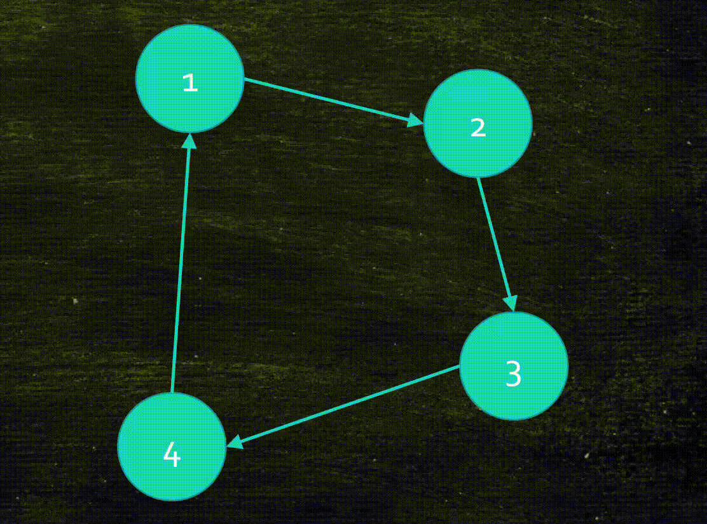
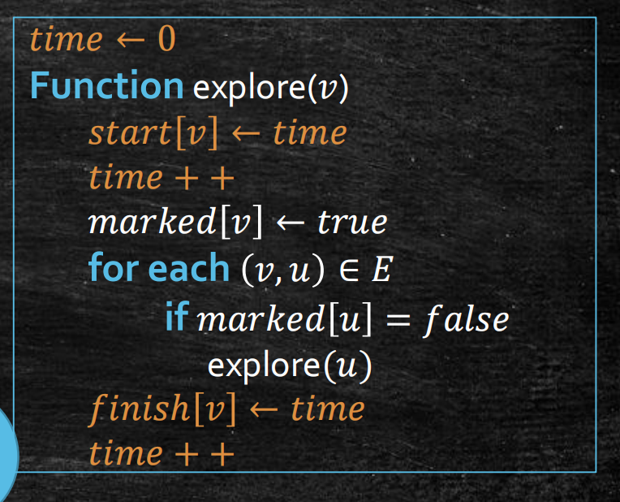
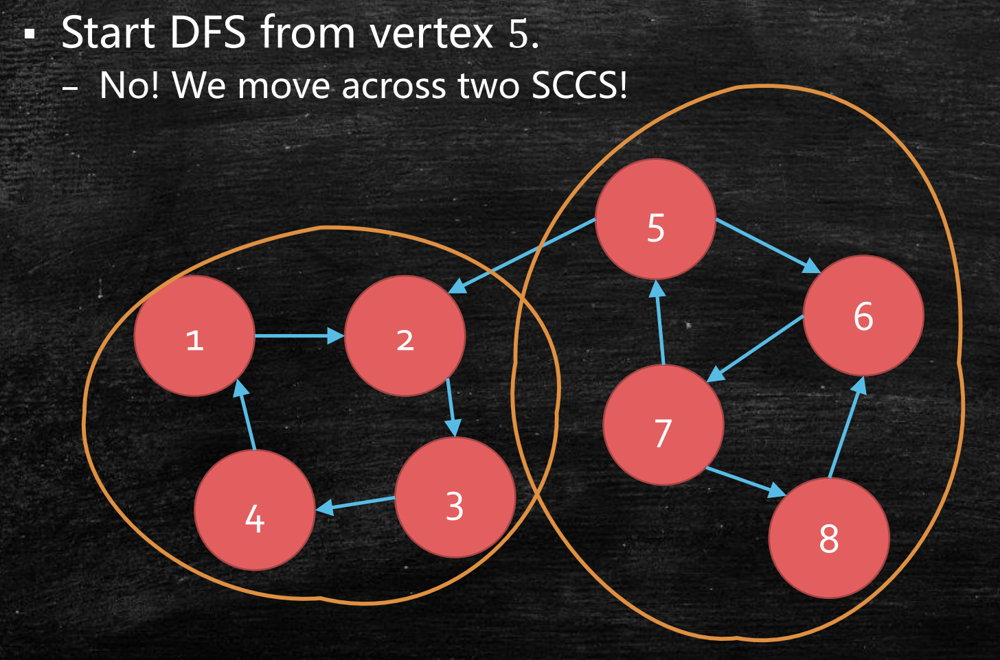

图(1)：DFS及其应用
Last updated on May 5, 2025 pm
本文以图的基础算法——深度优先搜索（DFS） 为核心，探讨了其在求连通分量、检查是否有环、拓扑排序、求强连通分量等问题中的应用。
我们正式进入到图算法的章节，让我们先复习一下图的基础知识。
图的基础知识复习
如果你有良好的离散数学和数据结构基础，可以跳过这一部分。
图的逻辑结构
图分为无向图和有向图。
- 无向图由顶点和边构成。边表示我们既可以从到，也可以从到。
- 有向图由顶点和弧构成。弧表示我们只能从到。
从定义可以看出，无向图其实是一种特殊的有向图，因为边就相当于弧加弧。那么一个有向图最多有多少条弧呢？不难想象，当每两个顶点间都有两条弧的时候，弧的数量最多，为。
图的存储结构
图可以用邻接矩阵或邻接表储存。
- 邻接矩阵：把图存储为一个的矩阵，其中
显然，存储邻接矩阵需要的空间为。
- 邻接表：对于每个顶点，我们在顶点表中存储一个链表，这个链表包含了的所有相邻结点。由于我们要在顶点表中存储个顶点，用个链表结点存储条弧，因此邻接表需要的空间为。
无向图中的DFS
图中有两大基本性质：
- 可达性：能否从一个顶点走到另一个顶点。
- 连通分量：在无向图中，指顶点间两两可达的的极大子图。“极大”是说再加入任何一个顶点，都会不满足顶点间两两可达。
关于有向图的连通分量概念，我们会在后文中提及。
可达性问题
让我们先来关注可达性问题，即给定一个以邻接表存储的图和一个顶点，要求所有从出发能到达的顶点。
探索算法设计
这应该如何思考？我们有如下观察：
- 首先，如果在的邻接表中，那么是可达的。
- 其次，如果是可达的，的邻接表中的顶点也是可达的。
那么，我们就可以考虑一个递归的探索过程，即先从开始探索，对每一个在的邻接表中的顶点，探索。这样就可以探索到所有从出发能到达的顶点。
这个算法有没有问题呢？请你考虑当图中出现了环的情况。

这时，我们的算法可能陷入死循环，因为它会不断重复地探索已经探索过的顶点。
事实上，这个算法无法完成用归纳法正确性证明，原因是每次的问题规模没有缩小，即要探索的顶点数没有减少。
为了避免探索已经探索过的顶点，我们应该怎么做？最简单的想法是，对已经到达过的顶点做标记，被标记过的顶点不再探索。这样，我们就有了如下的改进算法。
可以发现，在函数执行完后，所有被标记的顶点都是可达的，从而我们得到了一个含有的连通分量（无向图中）！
从探索算法到DFS
那么，如果我们想知道整个图中所有的连通分量呢？此时我们就需要搜索整张图。不难想到，我们可以遍历所有顶点，从每个未探索过的顶点开始探索。这样每一次完整的探索，都对应了一个连通分量。这就是深度优先搜索（Depth First Search, DFS）算法。
时间复杂度分析
DFS算法的时间复杂度似乎是一个棘手的问题。有一种思路是，函数会被执行次，每次执行会遍历该顶点相邻的所有边。
- 若采用邻接矩阵，每次找一个顶点相邻的所有边需要检查全部顶点，时间复杂度为，因此DFS的总时间复杂度为。
- 若采用邻接表，整体上来看每条边会被检查常数次（无向图2次/有向图1次），时间复杂度为，因此DFS的总时间复杂度为。
在这里，我们还可以使用之前介绍的负责论证（charging argument） 的思路来思考。

我们把探索的函数调用过程用树状图展示，这里的每个顶点和边会对常数次操作负责。我们只要把每一个操作找到对它负责的顶点或边，再求出顶点和边的数量，就能计算出时间复杂度。
- 函数中的顶点遍历，对应图中的条黄色边。
- 每个顶点调用函数及标记，对应图中的共个蓝色顶点。
- 对每个顶点遍历所有邻边，对应图中的共条蓝色边（无向图）。
这样，我们就对所有算法中的操作都找到了对它负责的对象，从而这些顶点和边分别对常数次操作负责。那么，我们将这些顶点和边的数量相加，即可得到最终的时间复杂度为（邻接表）。
求连通分量
让我们观察DFS在无向图中的探索过程。
从动画中，我们可以发现DFS名字的由来。在探索过程中，我们总是往深处走，一直走到无路可走，才会逐步回退，寻找新的路径，故名“深度优先搜索”。
我们还可以发现，每次调用函数，就会探索一个连通分量。也就是说，调用函数的次数，就等于无向图中连通分量的个数。这给我们求连通分量数提供了一个算法。
DFS树
在探讨DFS在无向图中的应用之前，让我们来探讨DFS的一个重要概念——DFS树。在图的一个连通分量中，选出DFS探索过的所有顶点和边，就形成了一棵DFS树。这棵树有如下特点：
- 根是第一个探索的顶点。
- 如果我们从探索到，那么是的父亲。
为什么DFS走过的路径能形成一棵树？我们探索了个连通的顶点及条边（因为除第一个探索的顶点外，其余顶点都通过一条边进入），根据图论的知识可以知道，这会形成一棵树。
可以发现，DFS树将原图上的边分成了两类：
- 树边（Tree edges，红色）：在DFS树上的边。
- 回边（Back edges，蓝色）：DFS树的祖先和非子后裔之间的边。
为什么不存在两棵子树之间的边（比如c和f之间）？我们可以采用反证法。假设c和f之间有一条边，那么探索完c或f后一定会继续探索另一顶点，而不会回退，这会导致c和f出现在以d为根的同一棵子树上，这与图中的DFS树矛盾。
检查是否有环
在引入了DFS树后，我们可以解决检查无向图是否有环的问题。
设无向图，其DFS树为。所谓有环，就是图存在边，也就是我们在DFS过程中会检查到一个已经标记过的顶点，或者说是的一条回边。我们可以提出如下猜想：
- 有回边 有环
简单证明一下这个猜想：
- ：若有回边，即存在子孙到祖先的边，那么由祖先到子孙再回到祖先的路径就是一个环。
- ：若有环，设环为。假设其中是第一个被探索的点，那么环中其他顶点都是的子孙，从而是一条回边。
总结
总结一下，在无向图中，DFS可以：
- 找到某个顶点所在的连通分量
- 找到所有的连通分量
- 检查一个图是否有环
有向图中的DFS
让我们从无向图移步到有向图，探索一下DFS在有向图中的应用。
DFS树
有向图中的DFS算法与无向图中完全一致（只要探索时注意边的方向即可），但有向图的DFS树与无向图有所不同。

有向图的DFS树上存在四种边：
- 树边（Tree edges，红色）：在DFS树上的边。
- 前向边（Forward edges，橙色）：指向非子后裔的边。
- 回边（Back edges，蓝色）：指向祖先的边。
- 横跨边（Cross edges，黄色）：指向已经完全访问过的顶点的边。
注意，在有向图中，和之间的边可以存在。比如我们先访问了，但此时由于没有指向的边，并不能访问，因此会回退，从而和可以出现在以为根的两棵子树上。
拓扑排序
考虑一个有向图，将顶点排成一个线性序列，使得对任意顶点和，如果有指向的边，那么序列中一定在之前，这个过程称为拓扑排序。
我们可以将有向图想象成培养计划，每个顶点表示一门课程，边表示课程间的先修关系，那么拓扑排序就是要找到一种修读课程的顺序，以保证在修读每门课程之前学过其所有先修课程。
那么，是不是任何有向图都存在拓扑序列呢？显然不是，比如有环的图就不可以。例如在右下图中，构成了一个环。在环中我们无法找到开始的顶点，因为环中任何顶点都有边指向它。还是考虑培养计划的例子，如果培养计划中存在环，我们无法修读从其中任何一门课程开始修读，因为修读一门课都需要先修过某个修读这门课才能修读的课。
那么，是不是有向无环图（Directed Acyclic Graph, DAG）都存在拓扑序列？也就是说，无环和存在拓扑序列对于有向图是等价的吗？
拓扑序列的存在性
想要证明无环和存在拓扑序列对于有向图等价，而我们已知有环图没有拓扑序列，所以我们只要证明DAG一定有拓扑序列即可。这里我们可以使用构造法，也就是如果我们能设计一个算法，使得对任意DAG都能找到拓扑序列，那么自然可以证明DAG一定有拓扑序列。
注意，这里构造拓扑序列的算法可以时间复杂度很高，因为我们只是想证明拓扑序列的存在性。
那么，如何构造拓扑序列？还是回到培养计划的例子，我们总是会选择修读先修课程已经都修完的课程。也就是说，从DAG中每次选择没有入边的顶点（即头顶点），从前往后构建拓扑序列。（入边即指向该顶点的边）
在这里，我们采用另一种对称的方式，即每次选择没有出边的顶点（即尾顶点），从后往前构建拓扑序列。这样设计的想法很简单——只有没有出边的顶点能够被放在最后，否则其出边所连的顶点应放在它的后面。
但是，我们先要证明DAG一定存在尾顶点。
这件事是容易的。想要找到尾顶点（即没有出边的顶点），我们只需要从任意顶点出发，沿着任意路径一直走，直到无路可走。又因为DAG中不存在环，我们不会回到走过的顶点，因此在不超过步后就会停下。这时我们无路可走，而脚下的顶点就是我们要找的尾顶点。可以看出，该算法的时间复杂度为。
有了尾顶点存在性的保证，拓扑排序算法也就容易得到了。我们只需要每次找到一个尾顶点，把它放到当前序列的前面（从后向前构建），再把这个尾顶点从图中移除，重复上述操作，最终就能得到一个拓扑序列。
对于这个算法的时间复杂度，我们每次确定一个顶点在序列中的位置，因此共要执行次循环。每次循环先用的时间找到尾顶点，再用的时间删除尾顶点。因此，总的时间复杂度为。
有了这个拓扑排序算法，我们也就证明了：无环和存在拓扑序列对有向图等价。
用DFS改进算法
那么，我们是否能用DFS算法来做得更好呢？在此之前，先让我们分析一下DFS在DAG上执行的特点，特别是DAG的DFS树的特点。
观察不难发现，与普通有向图相比，DAG中不存在回边。我们曾在无向图中证明过，回边和环的存在性等价。事实上，在有向图中也存在相同的结论，此处证明从略。
让我们尝试在DAG中执行DFS算法！但为了讨论方便，我们引入顶点的“开始时间”和“结束时间”。所谓“开始时间”和“结束时间”，分别指该顶点调用的函数的开始执行和执行结束的时间。

按照刚才的算法，我们需要不断从图中找到尾顶点。那么请你仔细观察DFS在DAG中的执行过程及结果，并猜测一下，DFS中什么样的点会是尾顶点？
一个很好的猜测是：尾顶点是，因为它的结束时间最早。这看起来是合理的，因为调用的函数最先结束是由于没有出边，无法继续探索。
那么移除了之后，下一个尾顶点是谁呢？你可能会说，是，因为它的结束时间是第二早的。也就是说，我们可以每次选择结束时间最早的点作为尾顶点。
为此，我们不妨大胆猜测，当我们按结束时间从大到小排列所有顶点，得到的序列就是拓扑序列。也就是说，DFS越早退出的顶点，排在拓扑序列的越后面。
接下来，让我们证明这个猜测。事实上，要证明这个猜测，等价于证明如果的结束时间早于，那么就不存在弧。
我们采用反证法。假设边存在，
- 如果是一条树边？这不可能，因为父亲的结束时间不可能早于儿子。
- 如果是一条前向边？这也不可能，因为祖先的结束时间不可能早于子孙。
- 如果是一条横跨边？那么访问的时候，一定已经完全结束，所以的结束时间更早，矛盾。
- 如果是一条回边？别忘了，DAG不存在回边。（事实上，这就是为什么拓扑排序要求DAG图。）
因此，我们证明了DFS结束时间的降序序列就是拓扑序列。
最后，我们分析这个算法的时间复杂度。先运行记录结束时间的DFS，再把顶点按结束时间排序，因此这个算法的时间复杂度为。但是，我们可以更聪明，即在每次函数返回时，将当前顶点加入拓扑序列。那么当DFS结束时，就直接能得到拓扑序列。这种做法的时间复杂度为。
求强连通分量（Kosaraju算法）
在之前的小节中，我们用DFS找到了无向图的连通分量。那么对于有向图呢？
强连通分量（SCC）
首先，我们需要定义有向图中的连通性。在无向图中，边没有方向，可达性是双向的。而在有向图中则不然。
- 左下图是弱连通的。因为其顶点两两之间并不都双向可达，但对应的无向图是连通图。
- 右下图是强连通的。因为其顶点两两之间都双向可达。
我们接着定义强连通分量（Strong Connected Component, SCC）。强连通分量是极大的强连通子图，即强连通分量中的顶点两两双向可达，且再加入任何一个顶点，都会破坏强连通性。
我们知道所有连通分量构成了图的一个划分，那么强连通分量是否能划分一个图呢？
设是图的所有强连通分量，我们想要证明它们构成的一个划分，即要证
对于1，我们只要证明对任意顶点，都存在包含的。这是容易的。由于是强连通的，我们从开始探索，并不断向其中添加与其强连通的顶点，直到极大，这就构成了一个强连通分量。因此一定存在包含任意顶点的SCC。
对于2，我们只要证明对任意顶点，仅有一个包含。采用反证法，假设和都包含同一个顶点，那么由于和中的顶点强连通，又和中的顶点强连通，所以和可以构成更大的强连通分量，这与SCC的极大性矛盾。
因此，我们证明了所有强连通分量构成了有向图的一个划分。
求强连通分量的尝试
那么，我们能否用DFS来寻找强连通分量呢？回想一下，在无向图中，DFS的一次就能找到一个连通分量。我们也可以在有向图中尝试这种简单的方法。
如果我们从顶点1出发进行DFS，在一次中确实找到了一个强连通分量。
但如果我们从顶点5出发，就会发现一次竟然走遍了两个强连通分量！

这说明，无向图中找连通分量的方法在有向图中并不适用。
那么，问题出在哪里？为什么从顶点1开始探索成功了，而从顶点5开始探索失败了呢？或者说，从什么样的顶点出发是会成功呢？
你可能发现了，顶点5的问题在于，它有一条指向其他SCC的出边。这条边使得它在探索的时候，跨越到了别的SCC中。因此，我们应当选择一个没有出边的SCC开始探索。
没有出边的SCC，指该SCC的所有顶点都没有指向其他SCC中顶点的边。我们可以把每个SCC看成一个巨大的顶点，这样会更好理解。
但首先，我们需要确定没有出边的SCC一定存在。在这里，我们用更宏观的视角看待整个图，将每个SCC视为一个巨大的顶点（超顶点），而其中的顶点都看作等价的，定义边存在就是存在，使得存在。我们不妨把这样得到的图称为SCC图，它直观展示了各SCC之间的连接关系。两个超顶点之间存在边，就说明我们在原图中可以从一个SCC走到另一个SCC。
与拓扑排序类似，我们将SCC中没有出边的SCC称为尾SCC。我们刚才说过，如果我们能确定一个尾SCC中的顶点，从这个点开始探索，那么一定能找到一个强连通分量，因为尾SCC中没有边指向其他强连通分量，也就是我们不会“走出去”。
但我们先需要证明尾SCC一定存在。采用反证法，假设尾SCC不存在，即所有SCC都有出边。那么我们就可以从任一超顶点开始，无限地走下去，这意味着SCC图中存在环。设这个环是由组成，那么是强连通的，从而它们应该是一个SCC，这显然矛盾。
事实上，SCC图一定是DAG，因为SCC间不存在环。
我们证明了尾SCC的存在。回顾一下，我们的想法是找到一个尾SCC中的顶点，从它开始探索出这个SCC，然后将这个SCC从图中移除，重复这个过程直到找到所有SCC。
但是现在，似乎存在着一些矛盾。我们想通过尾SCC中的顶点找到尾SCC，但是我们不知道尾SCC在哪里，怎么能找到尾SCC中的顶点呢？但我们确实存在一种神奇的方找到一个一定在尾SCC中的点！
回想拓扑排序中，我们通过最早的结束时间找到了尾顶点。那我们是不是可以把类似的想法用在这里，即DFS最早结束的顶点是否一定在尾SCC中？
在这张图中，我们从顶点5开始DFS，会发现最早结束的顶点是8，它并不在尾SCC中。因此我们的猜想错误。看来，最早的结束时间对我们并没有什么帮助。
那么，最晚的结束时间呢？注意到，当一个顶点结束探索时，表明它所有可达的顶点都已经走过。而在刚才的例子中，顶点5是最晚结束的，是它最终探索完了所有顶点！这似乎表明顶点5一定在头SCC中。因为头SCC没有入边，即不是头SCC中的顶点无法探索到头SCC中。我们可以大胆猜测，最晚结束的顶点一定在头SCC中。
证明采用反证法。假设是最晚结束的顶点，但其不在头SCC中，即存在另一个SCC中的顶点，有一条路径从到。
- 一定比开始得晚。否则，就会在DFS树中成为的子孙，从而结束得比早。
- 和一定在同一棵DFS树中。否则，由于比开始得晚，它会比结束得也晚。因此，是在DFS树上的祖先。
- 和一定是强连通的。从2可以看出，存在到的路径，因此和强连通。这显然和假设矛盾。
这样，我们就证明了最晚结束的顶点一定在头SCC中。但我们的目标是要找到在尾SCC中的顶点，这该如何实现？
一个神奇的想法是，构造反图！因为原图中在头SCC中的点，在反图中一定在尾SCC中！
将图的每条边反向，顶点不变，即可得到反图。
Kosaraju算法
整理我们以上的想法，就可以得到求SCC的Kosaraju算法。
先构建反图，在中运行记录结束时间的DFS算法，选出最晚结束的顶点（该顶点在原图的尾SCC中）。在原图中从顶点开始，当该函数返回时，所有到达过的顶点构成一个SCC。将该SCC中的顶点及邻边从和中移除，再重复上述操作，直到所有顶点都被移除。
用类似拓扑排序改进的方法，我们也可以改进这个算法，即只需在反图中运行一次DFS，并将顶点的结束时间排列好。接着，我们只要按结束时间从晚到早的顺序依次选择顶点（跳过已经到达过的），在原图中做并收获SCC即可。这个算法在反图和原图上各运行了一次DFS，因此时间复杂度为。

事实上，使用改进的算法还需要证明，我们选择的每个顶点都在剩余图的头SCC中。
注：本文中所有图片均来自张宇昊老师的课程PPT。